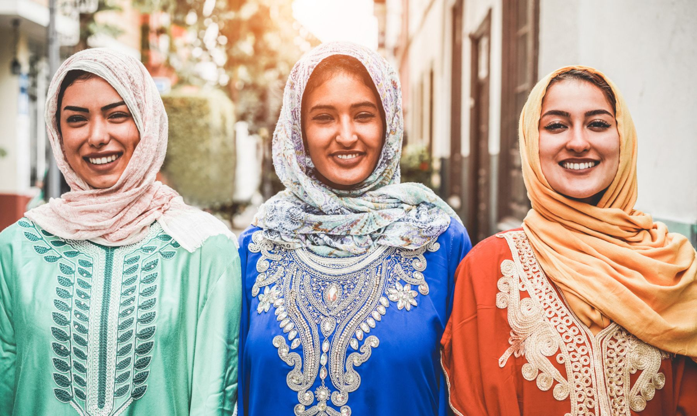

Marruecos
 Marruecos (en árabe: المغرب, al-Maġrib; en lenguas bereberes:
ⵎⵓⵔⴰⴽⵓⵛ, Murakuc), oficialmente el Reino de Marruecos (en árabe:
المملكة المغربية, al-Mamlaka al-Maġribiyya; en lenguas bereberes:
ⵜⴰⴳⵍⴷⵉⵜ ⵏ ⵎⵓⵔⴰⴽⵓⵛ, Tageldit-n-Murakuc), es un país soberano situado
en el Magreb, al norte de África, con costas en el océano Atlántico
y el mar Mediterráneo. El nombre completo del país en árabe puede
traducirse como El Reino Occidental. Al-Magrib, que significa el
Poniente, se usa comúnmente. Para las referencias históricas, los
historiadores emplean Al-Maġrib al-Aqṣà (El lejano Poniente) para
referirse a Marruecos, diferenciándola de la histórica región
llamada Magreb y que incluye los actuales Túnez y Argelia. El
término Marruecos en otras lenguas procede del nombre de la antigua
capital imperial Marrakech, proveniente de la expresión bereber que
significa "Tierra de Dios" (ⴰⵎⵓⵔ ⵏ ⵡⴰⴽⵓⵛ, (a)mur (n) wakuš >
Marruecos). Ocupa el 20.º lugar entre los países del mundo donde es
más estudiado el idioma español, con más de 80 000 estudiantes según
la información provista por el Instituto Cervantes en 2020
Marruecos (en árabe: المغرب, al-Maġrib; en lenguas bereberes:
ⵎⵓⵔⴰⴽⵓⵛ, Murakuc), oficialmente el Reino de Marruecos (en árabe:
المملكة المغربية, al-Mamlaka al-Maġribiyya; en lenguas bereberes:
ⵜⴰⴳⵍⴷⵉⵜ ⵏ ⵎⵓⵔⴰⴽⵓⵛ, Tageldit-n-Murakuc), es un país soberano situado
en el Magreb, al norte de África, con costas en el océano Atlántico
y el mar Mediterráneo. El nombre completo del país en árabe puede
traducirse como El Reino Occidental. Al-Magrib, que significa el
Poniente, se usa comúnmente. Para las referencias históricas, los
historiadores emplean Al-Maġrib al-Aqṣà (El lejano Poniente) para
referirse a Marruecos, diferenciándola de la histórica región
llamada Magreb y que incluye los actuales Túnez y Argelia. El
término Marruecos en otras lenguas procede del nombre de la antigua
capital imperial Marrakech, proveniente de la expresión bereber que
significa "Tierra de Dios" (ⴰⵎⵓⵔ ⵏ ⵡⴰⴽⵓⵛ, (a)mur (n) wakuš >
Marruecos). Ocupa el 20.º lugar entre los países del mundo donde es
más estudiado el idioma español, con más de 80 000 estudiantes según
la información provista por el Instituto Cervantes en 2020
Historia
★Prehistoria y antigüedad
Marruecos se independizó de Francia y España en 1956. Se encuentra separado de Europa por el estrecho de Gibraltar. Limita con Argelia al este (la frontera se encuentra cerrada desde 1994), con España al norte (con quien comparte fronteras marítimas y terrestres) y con el Sahara Occidental al sur, cuya soberanía reclama, se disputa con la República Árabe Saharaui Democrática y parcialmente ocupa, tras invadirlo en 1975 y abandonarlo España en 1976, que debía descolonizarlo. El yacimiento de Jebel Irhoud reveló la existencia de comunidades humanas establecidas entre 350 a 300 mil años antes del presente en territorio del actual Marruecos.Los yacimientos del período de la cultura capsiense del año 8000 a. C. señalan una continuidad de ocupación durante la prehistoria, en tiempos en que el Magreb era menos árido. Muchos teóricos creen que la lengua bereber apareció al mismo tiempo que la agricultura y fue adoptada por la población existente, así como los inmigrantes que la trajeron
★Siglo XXI y reinado de Mohamed VI
En 2002, Marruecos y España acordaron una resolución negociada por Estados Unidos sobre la disputada isla de Perejil. Las tropas españolas habían tomado la isla normalmente deshabitada después de que los soldados marroquíes aterrizaran en ella e instalaran tiendas de campaña y una bandera. Hubo tensiones renovadas en 2005, cuando cientos de inmigrantes africanos intentaron asaltar las fronteras de los enclaves españoles de Ceuta y Melilla. Marruecos deportó a cientos de inmigrantes ilegales. En 2006, el presidente del gobierno español José Luis Rodríguez Zapatero visitó enclaves españoles. Fue el primer mandatario español en veinticinco años en realizar una visita oficial a los territorios. Al año siguiente, el rey español Juan Carlos I visitó Ceuta y Melilla, lo que enfureció aún más a Marruecos, que exigió el control de los enclaves.
Geografía
Marruecos cuenta con cuatro cordilleras: el Rif, el Atlas Medio, el Gran Atlas y el Anti-Atlas. La montaña más alta es el Toubkal, que alcanza los 4162 m de altitud. Entre el Rif y el Atlas Medio está el valle del Sebú. Desde Larache hasta Agadir está la llanura atlántica y entre la anterior y el Atlas Medio hay una meseta situada por encima de los 500 m de altitud. Al sur del Anti-Atlas ya comienza el desierto del Sáhara. Los ríos principales: Sebú, Muluya, Um Er-Rbia, Tensift, Sus y Draa.
★Relieve
Entre los países del Magreb, Marruecos se distingue por la gran altitud de sus montañas y sus llanuras. El Alto Atlas tiene el pico más alto de Marruecos y de toda África del Norte, pero las superficies planas de Marruecos son mucho más extensas que en Argelia o Túnez. Tres grandes grupos de relieve deben ser distinguidos: las montañas, las llanuras y mesetas situadas al norte del Atlas Medio y las mesetas áridas situadas al sur del Anti-Atlas hacia el este y el sur. Las montañas mismas están formadas por dos conjuntos que difieren en su génesis y geomorfología.

★Clima
El clima es mediterráneo en las costas y más continental en el interior, con una distribución claramente invernal de las precipitaciones (que oscilan entre 300 y 800 mm) (y 1000 mm en la región de Tánger-Tetuán) y unas temperaturas de enero que rondan los 12-13 °C en la costa y los 10 °C en Fez, Mequinez, Uchda y Marrakech. Las temperaturas de julio rondan los 25 °C en la costa y lugares del interior. En las montañas las precipitaciones son más abundantes y las temperaturas más bajas. En el Sáhara el clima ya es desértico y muy árido.
★Flora
La flora de Marruecos, con cerca de 4200 especies, es una de las más ricas del norte de África y una de las más diversas de la región mediterránea. En el norte de Marruecos, en la región tingitana y el Rif, se acaban de catalogar 2915 especies y 344 taxones infraespecícicos. Vegetación de tipo mediterráneo, escalonada en pisos altitudinales. Principales especies: encina, alcornoque, cedro y pino. El bioma dominante en Marruecos es el bosque mediterráneo, dividido por WWF en tres ecorregiones: el bosque mediterráneo norteafricano, al norte, la estepa arbustiva mediterránea, en el centro-este, y el bosque seco mediterráneo y matorral suculento de acacias y erguenes, al suroeste. También están presentes el bosque montano norteafricano de coníferas, la estepa de enebros del Gran Atlas, en las montañas, y la estepa del Sahara septentrional, más desértica, en el sureste.
Cultura
Marruecos es un país de grupos multiétnicos con una rica cultura y civilización. A lo largo de su historia, ha recibido visitantes tanto del este (fenicios, judíos y árabes), del sur (habitantes de África Subsahariana) y del norte (romanos y vándalos), quienes han impactado la estructura social de Marruecos. En el país conviven, además, distintos tipos de religiones, tales como el paganismo, el Judaísmo, el Cristianismo y el Islam. Cada región posee sus propias características, contribuyendo a la cultura nacional. Marruecos ha establecido entre sus principales prioridades la protección de su diversidad y la preservación de su patrimonio cultural.
Políticamente, y por sus orígenes, Marruecos se trata de un país amazigh perteneciente a África, aunque es denominado en ocasiones como un estado arabo-bereber y en otras como un estado amazigh Al menos la tercera parte de la población habla en lengua bereber. Durante la expansión islámica, algunos árabes se establecieron en las regiones marroquíes de Tadla y Doukkala. Por ejemplo, existen grupos llamados Charkawa y Arbawa que llegaron al país desde Arabia. Los Charkawa dicen descender de Omar Ibn Al Khatab.

Lingüísticamente, el pertenece al grupo afro-asiático, y tiene muchos acentos y variantes. Las tres lenguas amazigh más utilizados en Marruecos son el Tachelhit, Tamazight y el Tarifit (también llamado Tamazight por sus hablantes). En forma colectiva, dichos dialectos son conocidos como «Chelha» en árabe marroquí y como «Barbaria» en el árabe tradicional utilizado en Oriente Medio. Los términos «Barbar» y «Chelha» son considerados por la mayor parte de los activistas bereberes como extremadamente ofensivos y humillantes.